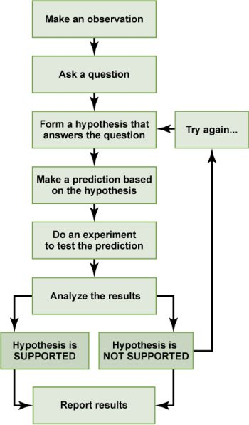

1.3: The Scientific Approach to Understand Brain and Behavior
Biological psychology uses many techniques to observe, measure, and manipulate the brain, but researchers across all fields use the same underlying approach—science and the scientific method. The scientific method is a systematic way of gathering and testing evidence based on observation and experimentation.
The scientific process usually starts with an observation or question that one wants to understand. A researcher proposes a tentative explanation, called a hypothesis, to explain the phenomenon. A valid hypothesis must be testable. It should also be falsifiable, meaning that experimental results can disprove it. Importantly, science does not claim to “prove” anything because scientific understandings are always subject to modification with further information. This step—openness to disproving ideas—distinguishes science from non-science. The presence of the supernatural, for instance, is neither testable nor falsifiable. A hypothesis should also fit into the context of a scientific theory, a broad explanation for some aspect of the natural world that is consistently supported by evidence over time. A theory is the best understanding we have of that part of the natural world.
The researcher then tests the validity of the hypothesis by making observations or carrying out an experiment. An experiment will have one or more variables and one or more controls. A variable is any part of the experiment that can vary or change during the experiment; an independent variable is manipulated by the researcher, and a dependent variable is the outcome variable that is measured. The control group contains every feature of the experimental group except the manipulation from the researcher’s hypothesis. Therefore, if results from the experimental group differ from the control group, that difference must be due to the hypothesized manipulation, rather than some outside factor.
For example, if a researcher hypothesizes that a certain drug decreases appetite, they could perform an experiment with the independent (manipulated) variable “drug or no-drug,” and the dependent (measured) variable “amount of food eaten.” The researcher would randomly assign some participants to the experimental group who gets the drug, and other participants to the control group who gets a placebo pill that looks like the drug. Through random assignment and a proper control condition, only the drug would differ between the experimental and control groups. If the experimental (drug) group eats less than the control (placebo) group, then one could conclude that the hypothesis is supported. Conversely, the research could lead to rejecting the hypothesis if not supported by the experimental data.
After analyzing their data, researchers communicate their results and conclusions in publications or presentations so that others can critique, replicate, or build on the results. In addition to publishing a report, researchers now regularly publish their datasets, so that others can re-analyze the data to ensure quality and maybe find something new without having to collect new data. Study results inform future studies and help refine hypotheses (see Figure 3). Experimental outcomes can prompt shifts in approach or spark new research questions. Many times, science does not operate in a linear fashion. Instead, scientists continually draw inferences and make generalizations, finding patterns as their research proceeds.
Science and the scientific method are the best way to understand and study the brain because they provide us with rigorous, objective, and verifiable knowledge that can help us improve our health, education, and well-being.

Basic and Applied Research. Across the various subfields of biological psychology, research can be categorized as basic or applied. Basic research, also known as pure research, is driven by scientific curiosity or an interest in understanding the mechanisms of brain function and brain-behavior relationships. It seeks to answer fundamental questions about how the brain works and explores the biological basis of behavior, emotions, and cognitive processes, by examining genetics, neurotransmission, brain circuitry, and other physiological processes. On the other hand, applied research in biological psychology takes findings from basic research and uses them to solve real-world issues. Examples of applied research include developing therapeutic interventions for mental disorders, devising strategies to optimize learning and memory, or creating neurofeedback methods for stress reduction. While the two types of research may seem distinct, they are interdependent. Basic research lays the groundwork for the applications that emerge from applied research, and applied research often raises new questions that drive basic research. In public and political debates, people sometimes argue for cutting funding of basic science because they contend it has no practical value. However basic science works in synergy with applied science—together they are both essential to the development of biological psychology and science more broadly.
Text Attributions
This section contains material adapted from:
Clark, M. A., Douglas, M., & Choi, J. (2018). 1.1 The Science of Biology. In Biology 2e. OpenStax. Access for free at https://openstax.org/books/biology-2e/pages/1-1-the-science-of-biology License: CC BY 4.0 DEED.
Spielman, R. M., Jenkins, W. J., & Lovett, M. D. (2020). 1.1 What Is Psychology? In Psychology 2e.OpenStax. Access for free at https://openstax.org/books/psychology-2e/pages/1-1-what-is-psychology License: CC BY 4.0 DEED.
Media Attributions
- The scientific method © OpenStax is licensed under a CC BY-NC-SA (Attribution NonCommercial ShareAlike) license
a tentative explanation of some phenomenon that is used as a starting point for further investigation.
A theory or hypothesis is falsifiable (or refutable) if it can be logically contradicted by an empirical test.
A broad explanation or group of explanations for some aspect of the natural world that is consistently supported by evidence over time
A variable that is manipulated by the researcher. The independent variable is “independent” of other variables and is typically considered the cause.
The outcome variable that is measured by the researcher. The dependent variable depends on changes of the independent variable.
A way of placing participants into different groups with randomization. Every member of the sample has an equal chance of being placed in a control group or an experimental group.
Also known as pure or fundamental research, seeks to expand scientific knowledge and understand the mechanisms of brain function
Research that can be directly applied to an existing problem